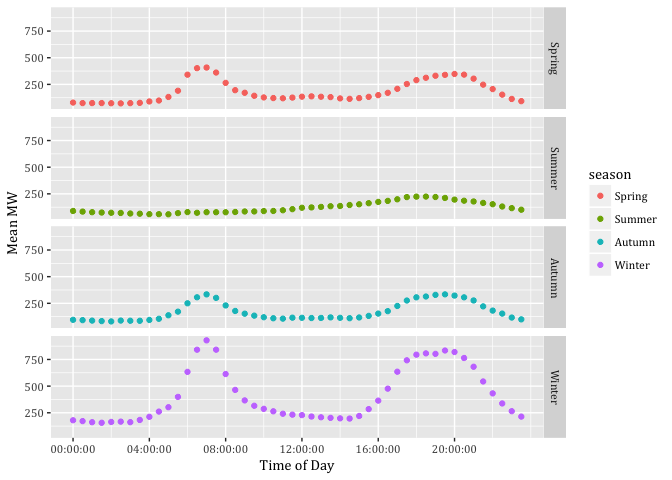
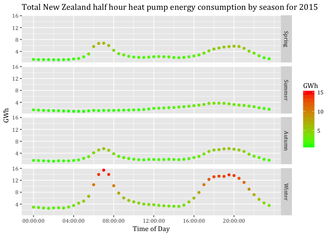

Technical Potential of Demand Response
Heat Pump Analysis
Carsten Dortans (xxx@otago.ac.nz)
Last run at: 2018-07-18 11:39:40
1 Citation
If you wish to use any of the material from this report please cite as:
- Dortans, C. (2018) Technical Potential of Demand Response: Heat Pump Analysis, Centre for Sustainability, University of Otago: Dunedin.
This work is (c) 2018 the University of Southampton.
2 About
2.2 Purpose
This report is intended to:
- load and test GREEN Grid heat pump and hot water profiles.
2.3 Requirements:
- test dataset stored at /Users/carsten.dortans/Dropbox/Carsten_MA/ggData/profiles/
2.5 Support
This work was supported by:
- The University of Otago;
- The University of Southampton;
- The New Zealand Ministry of Business, Innovation and Employment (MBIE) through the NZ GREEN Grid project;
- SPATIALEC - a Marie Skłodowska-Curie Global Fellowship based at the University of Otago’s Centre for Sustainability (2017-2019) & the University of Southampton’s Sustainable Energy Research Group (2019-202).
We do not ‘support’ the code but if you have a problem check the issues on our repo and if it doesn’t already exist, open one. We might be able to fix it :-)
3 Load data files
3.1 Heat pump profiles
This file is the pre-aggregated data for all heat pump circuits in the GREEN Grid data for April 2015 - March 2016 (check!)
ggParams$profilesFile <- paste0(ggParams$dataLoc, "Heat Pump_2015-04-01_2016-03-31_overallSeasonalProfiles.csv.gz")In this section we load and describe the data files from /Users/carsten.dortans/Dropbox/Carsten_MA/ggData/profiles/Heat Pump_2015-04-01_2016-03-31_overallSeasonalProfiles.csv.gz.
print(paste0("Trying to load: ", ggParams$profilesFile))## [1] "Trying to load: /Users/carsten.dortans/Dropbox/Carsten_MA/ggData/profiles/Heat Pump_2015-04-01_2016-03-31_overallSeasonalProfiles.csv.gz"heatPumpProfileDT <- data.table::as.data.table(readr::read_csv(ggParams$profilesFile))## Parsed with column specification:
## cols(
## obsHourMin = col_time(format = ""),
## season = col_character(),
## meanW = col_double(),
## medianW = col_double(),
## nObs = col_integer(),
## sdW = col_double()
## )Describe using skim:
skimr::skim(heatPumpProfileDT)## Skim summary statistics
## n obs: 5760
## n variables: 6
##
## ── Variable type:character ────────────────────────────────────────────────────────────────────────────────────────────────
## variable missing complete n min max empty n_unique
## season 0 5760 5760 6 6 0 4
##
## ── Variable type:difftime ─────────────────────────────────────────────────────────────────────────────────────────────────
## variable missing complete n min max median n_unique
## obsHourMin 0 5760 5760 0 secs 86340 secs 43170 secs 1440
##
## ── Variable type:integer ──────────────────────────────────────────────────────────────────────────────────────────────────
## variable missing complete n mean sd p0 p25 p50 p75
## nObs 0 5760 5760 2474.38 193.08 2150 2402.5 2517.5 2599.25
## p100 hist
## 2688 ▅▁▁▁▁▇▁▅
##
## ── Variable type:numeric ──────────────────────────────────────────────────────────────────────────────────────────────────
## variable missing complete n mean sd p0 p25 p50 p75
## meanW 0 5760 5760 143.52 116.99 34.99 71.88 104.76 174.71
## medianW 0 5760 5760 17.09 67.67 0 0 0 0
## sdW 0 5760 5760 329.77 146.05 101.04 234.33 298.61 407.13
## p100 hist
## 613.89 ▇▃▂▁▁▁▁▁
## 392.55 ▇▁▁▁▁▁▁▁
## 879.07 ▆▇▆▅▂▂▁▁Draw a plot of GreenGrid heat pump profiles.
myPlot <- ggplot2::ggplot(heatPumpProfileDT, aes(x = obsHourMin, colour = season)) +
geom_point(aes(y = meanW)) +
facet_grid(season ~ .)
myPlotFigure 3.1: Heat pump profiles
4 Scaling method 1
Now draw a plot of what woud happen if we scaled this up to all NZ households?
Figure 4.1
nzHH <- 1549890
heatPumpProfileDT <- heatPumpProfileDT[, scaledMWmethod1 := (meanW * nzHH)/10^6]
myPlot <- ggplot2::ggplot(heatPumpProfileDT, aes(x = obsHourMin, colour = season)) +
geom_point(aes(y = scaledMWmethod1)) +
facet_grid(season ~ .)
myPlotFigure 4.1: Mean Load Heat Pumps by Season
5 Scaling method 2
Alternative calculation method: Assuming EECA data is correct for heat pump value, 1) generating the percentage of total load (peroftotal) while telling data.table to create a new column with the calculation of the percentage. We then multiplied EECA’s total GWh with the percentage
totalGWH<-708
summeanW<-heatPumpProfileDT[,sum(meanW)]
heatPumpProfileDT <- heatPumpProfileDT[, EECApmMethod2 := (meanW / summeanW) * totalGWH]
myPlot <- ggplot2::ggplot(heatPumpProfileDT, aes(x = obsHourMin, colour = season)) +
geom_point(aes(y = EECApmMethod2)) +
facet_grid(season ~ .) +
labs(x='Time of Day', y='GWh')
myPlot
6 Aggregation to half-hours
So far we have used data at the 1 minute level. This makes for difficulties in comparison with standared electricity sector half-hourly tariff periods etc. This section takes each scaling method, aggregates to half-hours as appropriate and re-plots.
To do that we need to set a half-hour value from the observed time. We do this using truncate so that:
- 13:18:00 -> 13:00:00
- 13:40:00 -> 13:30 etc
NB: This means any plots will be using the 1/2 hour value at the start of the period!
# create a 'half hour' variable for aggregation
heatPumpProfileDT <- heatPumpProfileDT[, obsHalfHour := hms::trunc_hms(obsHourMin, 1800)] # <- this truncates the time to the previous half hour (hms works in seconds so 30 mins * 60 secs = 1800 secs). e.g. 13:18:00 -> 13:00:00 but 13:40:00 -> 13:30 etc
# This means any plots will be using the 1/2 hour value at the -> start <- of the period!
# check
head(heatPumpProfileDT)## obsHourMin season meanW medianW nObs sdW scaledMWmethod1
## 1: 00:00:00 Autumn 72.43808 0 2543 253.7921 112.2711
## 2: 00:00:00 Spring 87.36049 0 2512 289.1072 135.3991
## 3: 00:00:00 Summer 82.63281 0 2160 258.2699 128.0718
## 4: 00:00:00 Winter 150.92446 0 2685 383.6956 233.9163
## 5: 00:01:00 Autumn 70.26538 0 2544 238.4719 108.9036
## 6: 00:01:00 Spring 86.17364 0 2511 286.9992 133.5597
## EECApmMethod2 obsHalfHour
## 1: 0.06203848 00:00:00
## 2: 0.07481856 00:00:00
## 3: 0.07076961 00:00:00
## 4: 0.12925695 00:00:00
## 5: 0.06017771 00:00:00
## 6: 0.07380210 00:00:006.1 Method 1
# aggregate the scaled MW to half hours
# as it is MW we need to take the mean - taking the sum would not be meaningfull
method1AggDT <- heatPumpProfileDT[, .(meanMW = mean(scaledMWmethod1)),
keyby = .(season, obsHalfHour)] # <- takes the mean for each category of half hour & season
myPlot <- ggplot2::ggplot(method1AggDT, aes(x = obsHalfHour, colour = season)) +
geom_point(aes(y = meanMW)) +
facet_grid(season ~ .) +
labs(x='Time of Day', y='Mean MW') +
scale_x_time(breaks = c(hms::as.hms("06:00:00"), hms::as.hms("09:00:00"), hms::as.hms("12:00:00"),
hms::as.hms("15:00:00"), hms::as.hms("18:00:00"), hms::as.hms("21:00:00")))
myPlot
6.2 Method 2
Used the EECA total NZ number for heat pump energy consumption and converted it into GWh. Converted minute data into half-hour steps. To do :-)
NB: should you aggregate this scaling method using mean or sum? Why? :-) –>Since we take the percentages of GWh we need to sum up
# aggregate the percentage of GWh
method2AggDT <- heatPumpProfileDT[, .(GWh = sum(EECApmMethod2)),
keyby = .(season, obsHalfHour)] # <- takes the sum for each category of half hour & season
myPlot <- ggplot2::ggplot(method2AggDT, aes(x = obsHalfHour, colour=GWh)) +
geom_point(aes(y = GWh)) +
ggtitle("Total New Zealand half hour heat pump energy consumption by season for 2015") +
facet_grid(season ~ .) +
labs(x='Time of Day', y='GWh') +
scale_x_time(breaks = c(hms::as.hms("00:00:00"), hms::as.hms("03:00:00"), hms::as.hms("06:00:00"), hms::as.hms("09:00:00"), hms::as.hms("12:00:00"),
hms::as.hms("15:00:00"), hms::as.hms("18:00:00"), hms::as.hms("21:00:00"))) +
scale_colour_gradient(low= "green", high="red")
myPlot
7 BRANZ vs. EECA comparison
nzHHheatPumps <- 515015 #This is based on the BRANZ report of household ownership (House condition survey 2015) and 2013 census data
wToKw <- 1000
assumeDaysPerSeason <- 90
heatPumpProfileDT <- heatPumpProfileDT[, scaledGWh := (((meanW * nzHHheatPumps)/wToKw)*(1/60)*assumeDaysPerSeason)/1000/1000] # <- convert mean W to kWh for all NZ hhs, then assumes 90 days per season and calculate GWh
sumbranzGWh <- heatPumpProfileDT[, sum(scaledGWh)]
diffbranzeeca <- 1-(sumbranzGWh/totalGWH)
skimr::skim(sumbranzGWh)##
## Skim summary statistics
##
## ── Variable type:numeric ──────────────────────────────────────────────────────────────────────────────────────────────────
## variable missing complete n mean sd p0 p25 p50 p75
## sumbranzGWh 0 1 1 638.63 NA 638.63 638.63 638.63 638.63
## p100 hist
## 638.63 ▁▁▁▇▁▁▁▁skimr::skim(totalGWH)##
## Skim summary statistics
##
## ── Variable type:numeric ──────────────────────────────────────────────────────────────────────────────────────────────────
## variable missing complete n mean sd p0 p25 p50 p75 p100 hist
## totalGWH 0 1 1 708 NA 708 708 708 708 708 ▁▁▁▇▁▁▁▁skimr::skim(diffbranzeeca)##
## Skim summary statistics
##
## ── Variable type:numeric ──────────────────────────────────────────────────────────────────────────────────────────────────
## variable missing complete n mean sd p0 p25 p50 p75 p100
## diffbranzeeca 0 1 1 0.098 NA 0.098 0.098 0.098 0.098 0.098
## hist
## ▁▁▁▇▁▁▁▁Wee identify that BRANZ in comination with GREENGrid Grid Spy and 2013 household ownership census data represent a 9% lower total energy consumption for heat pumps than EECA calculates.
EECA total energy consumption by heat pumps for 2015 (totalGWH) <- 708GWh
BRANZ 40% of owner-occupied households and 25% of rentals own heat pumps. Energy consumption based on BRANZ proportion, Census 2013 and GREENGris Grid Spy data (sumbranzGWh) <- 638GWh
8 Yearly consumption
We need the original data for this, currently the data basis is for an average day in each season.
heatPumpProfileDT <- heatPumpProfileDT[, obsHalfHour := hms::trunc_hms(obsHourMin, 1800)]9 Technical potential of demand response: Scenarios for heat pump data
We assume that peak time periods are prevalent from 6.00am-10.00am and from 4.00pm-8.00pm.
9.1 Load curtailment to zero: SC1
In this first scenario we assume that the laod during peak time periods is cut out of the consumption pattern.
9.1.1 Defining peak/off-peak periods
Steps: 1) Extracting peak time-periods from heat pump data 2) Building sum of GWh
sc1data <- heatPumpProfileDT
sc1data[, c("medianW", "obsHourMin", "meanW", "nObs", "sdW",
"scaledMWmethod1", "EECApmMethod2"):=NULL] #Deleting unnecessary columns
sc1data <- sc1data[, .(GWh = sum(scaledGWh)),
keyby = .(season, obsHalfHour)]
sc1data <- sc1data[, Period := "Not Peak"]
sc1data <- sc1data[obsHalfHour >= hms::as.hms("06:00:00") &
obsHalfHour <= hms::as.hms("10:00:00"),
Period := "Morning Peak"]
sc1data <- sc1data[obsHalfHour >= hms::as.hms("16:00:00") &
obsHalfHour <= hms::as.hms("20:00:00"),
Period := "Evening Peak"]9.1.2 Visualising periods
myPlot <- ggplot2::ggplot(sc1data, aes(x = obsHalfHour, color=Period)) +
geom_point(aes(y=GWh), size=0.5, alpha = 1) +
theme(text = element_text(family = "Cambria")) +
ggtitle("Total heat pump energy consumption by time-period") +
facet_grid(season ~ .) +
labs(x='Time of Day', y='GWh') +
scale_y_continuous(breaks = c(3, 6, 9, 12)) +
scale_x_time(breaks = c(hms::as.hms("00:00:00"), hms::as.hms("03:00:00"), hms::as.hms("06:00:00"), hms::as.hms("09:00:00"), hms::as.hms("12:00:00"),
hms::as.hms("15:00:00"), hms::as.hms("18:00:00"), hms::as.hms("21:00:00")))
#scale_colour_gradient(low= "green", high="red", guide = "colorbar")
myPlot
#ggsave("Total heat pump energy consumption by time-period for 2015.jpeg",
#dpi=600)9.1.3 Potential load curtailment output by period in GWh
sc1data <- sc1data[, .(PotCur = sum(GWh)),
keyby = .(season, Period)]
sc1data## season Period PotCur
## 1: Autumn Evening Peak 29.11365
## 2: Autumn Morning Peak 38.35385
## 3: Autumn Not Peak 56.17032
## 4: Spring Evening Peak 35.80694
## 5: Spring Morning Peak 39.09743
## 6: Spring Not Peak 56.38630
## 7: Summer Evening Peak 10.12392
## 8: Summer Morning Peak 23.28916
## 9: Summer Not Peak 53.98303
## 10: Winter Evening Peak 75.27774
## 11: Winter Morning Peak 96.89743
## 12: Winter Not Peak 124.131419.1.4 Visualising curtailed periods
sc1data <- heatPumpProfileDT
sc1data[, c("medianW", "obsHourMin", "meanW", "nObs", "sdW",
"scaledMWmethod1", "EECApmMethod2"):=NULL] #Deleting unnecessary columns## Warning in `[.data.table`(sc1data, , `:=`(c("medianW", "obsHourMin",
## "meanW", : Adding new column 'medianW' then assigning NULL (deleting it).## Warning in `[.data.table`(sc1data, , `:=`(c("medianW", "obsHourMin",
## "meanW", : Adding new column 'obsHourMin' then assigning NULL (deleting
## it).## Warning in `[.data.table`(sc1data, , `:=`(c("medianW", "obsHourMin",
## "meanW", : Adding new column 'meanW' then assigning NULL (deleting it).## Warning in `[.data.table`(sc1data, , `:=`(c("medianW", "obsHourMin",
## "meanW", : Adding new column 'nObs' then assigning NULL (deleting it).## Warning in `[.data.table`(sc1data, , `:=`(c("medianW", "obsHourMin",
## "meanW", : Adding new column 'sdW' then assigning NULL (deleting it).## Warning in `[.data.table`(sc1data, , `:=`(c("medianW", "obsHourMin",
## "meanW", : Adding new column 'scaledMWmethod1' then assigning NULL
## (deleting it).## Warning in `[.data.table`(sc1data, , `:=`(c("medianW", "obsHourMin",
## "meanW", : Adding new column 'EECApmMethod2' then assigning NULL (deleting
## it).sc1data <- sc1data[, .(GWhs1 = sum(scaledGWh)),
keyby = .(season, obsHalfHour)]
sc1data <- sc1data[, Period := "Not Peak"]
sc1data <- sc1data[obsHalfHour >= hms::as.hms("06:00:00") &
obsHalfHour <= hms::as.hms("10:00:00"),
Period := "Morning Peak"]
sc1data <- sc1data[obsHalfHour >= hms::as.hms("16:00:00") &
obsHalfHour <= hms::as.hms("20:00:00"),
Period := "Evening Peak"]
sc1data <- sc1data[, GWh:=GWhs1] # Creating new column GWh based on GWhs1
#sc1data <- sc1data[Period == "Evening Peak",
#GWh := 0]
sc1data <- sc1data[, GWh:= ifelse(Period == "Evening Peak", 0, GWh )] # If Period is Evening peak then make GWh zero
sc1data <- sc1data[, GWh:= ifelse(Period == "Morning Peak", 0, GWh )]
myPlot <- ggplot2::ggplot(sc1data, aes(x = obsHalfHour, y = GWh, color=GWh)) +
geom_line(size=0.5) +
theme(text = element_text(family = "Cambria")) +
ggtitle("Total heat pump load curtailment in peak time-periods by season") +
facet_grid(season ~ .) +
labs(x='Time of Day', y='GWh') +
scale_y_continuous(breaks = c(3, 6, 9, 12)) +
scale_x_time(breaks = c(hms::as.hms("00:00:00"), hms::as.hms("03:00:00"), hms::as.hms("06:00:00"), hms::as.hms("09:00:00"), hms::as.hms("12:00:00"),
hms::as.hms("15:00:00"), hms::as.hms("18:00:00"), hms::as.hms("21:00:00"))) +
scale_colour_gradient(low= "green", high="red", guide = "colorbar")
myPlot
#ggsave("Total heat pump load curtailment in peak time-periods by season.jpeg",
#dpi=600) 9.2 Load curtailment of particular amount: SC2
9.2.1 Visualising new load profile
sc1data <- heatPumpProfileDT
sc1data[, c("medianW", "obsHourMin", "meanW", "nObs", "sdW",
"scaledMWmethod1", "EECApmMethod2"):=NULL] #Deleting unnecessary columns## Warning in `[.data.table`(sc1data, , `:=`(c("medianW", "obsHourMin",
## "meanW", : Adding new column 'medianW' then assigning NULL (deleting it).## Warning in `[.data.table`(sc1data, , `:=`(c("medianW", "obsHourMin",
## "meanW", : Adding new column 'obsHourMin' then assigning NULL (deleting
## it).## Warning in `[.data.table`(sc1data, , `:=`(c("medianW", "obsHourMin",
## "meanW", : Adding new column 'meanW' then assigning NULL (deleting it).## Warning in `[.data.table`(sc1data, , `:=`(c("medianW", "obsHourMin",
## "meanW", : Adding new column 'nObs' then assigning NULL (deleting it).## Warning in `[.data.table`(sc1data, , `:=`(c("medianW", "obsHourMin",
## "meanW", : Adding new column 'sdW' then assigning NULL (deleting it).## Warning in `[.data.table`(sc1data, , `:=`(c("medianW", "obsHourMin",
## "meanW", : Adding new column 'scaledMWmethod1' then assigning NULL
## (deleting it).## Warning in `[.data.table`(sc1data, , `:=`(c("medianW", "obsHourMin",
## "meanW", : Adding new column 'EECApmMethod2' then assigning NULL (deleting
## it).sc1data <- sc1data[, .(GWhs1 = sum(scaledGWh)),
keyby = .(season, obsHalfHour)]
sc1data <- sc1data[, Period := "Not Peak"]
sc1data <- sc1data[obsHalfHour >= hms::as.hms("06:00:00") &
obsHalfHour <= hms::as.hms("10:00:00"),
Period := "Morning Peak"]
sc1data <- sc1data[obsHalfHour >= hms::as.hms("16:00:00") &
obsHalfHour <= hms::as.hms("20:00:00"),
Period := "Evening Peak"]
sc1data <- sc1data[, GWh:=GWhs1] # Creating new column GWh based on GWhs1
sc1data <- sc1data[, GWh:= ifelse(Period == "Evening Peak", 0.5*GWh, GWh )] # If Period is Evening peak then change the value of GWh by 50%
sc1data <- sc1data[, GWh:= ifelse(Period == "Morning Peak", GWh*0.5, GWh )]
myPlot <- ggplot2::ggplot(sc1data, aes(x = obsHalfHour, y = GWh, color=GWh)) +
geom_line(size=0.5) +
theme(text = element_text(family = "Cambria")) +
ggtitle("Total heat pump load curtailment in peak time-periods by season 50%") +
facet_grid(season ~ .) +
labs(x='Time of Day', y='GWh') +
scale_y_continuous(breaks = c(3, 6, 9, 12)) +
scale_x_time(breaks = c(hms::as.hms("00:00:00"), hms::as.hms("03:00:00"), hms::as.hms("06:00:00"), hms::as.hms("09:00:00"), hms::as.hms("12:00:00"),
hms::as.hms("15:00:00"), hms::as.hms("18:00:00"), hms::as.hms("21:00:00"))) +
scale_colour_gradient(low= "green", high="red", guide = "colorbar")
myPlot
#ggsave("Total heat pump load curtailment in peak time-periods by season 50.jpeg",
# dpi=600) 9.2.2 Potential load curtailment based on percentage curtailed
sc1data <- sc1data[, .(PotCur = sum(GWh)),
keyby = .(season, Period)]
sc1data## season Period PotCur
## 1: Autumn Evening Peak 14.556826
## 2: Autumn Morning Peak 19.176923
## 3: Autumn Not Peak 56.170319
## 4: Spring Evening Peak 17.903472
## 5: Spring Morning Peak 19.548717
## 6: Spring Not Peak 56.386304
## 7: Summer Evening Peak 5.061961
## 8: Summer Morning Peak 11.644582
## 9: Summer Not Peak 53.983031
## 10: Winter Evening Peak 37.638868
## 11: Winter Morning Peak 48.448717
## 12: Winter Not Peak 124.1314119.3 Load shifting to prior periods: SC3
sc1data <- heatPumpProfileDT
sc1data[, c("medianW", "obsHourMin", "meanW", "nObs", "sdW",
"scaledMWmethod1", "EECApmMethod2"):=NULL] #Deleting unnecessary columns## Warning in `[.data.table`(sc1data, , `:=`(c("medianW", "obsHourMin",
## "meanW", : Adding new column 'medianW' then assigning NULL (deleting it).## Warning in `[.data.table`(sc1data, , `:=`(c("medianW", "obsHourMin",
## "meanW", : Adding new column 'obsHourMin' then assigning NULL (deleting
## it).## Warning in `[.data.table`(sc1data, , `:=`(c("medianW", "obsHourMin",
## "meanW", : Adding new column 'meanW' then assigning NULL (deleting it).## Warning in `[.data.table`(sc1data, , `:=`(c("medianW", "obsHourMin",
## "meanW", : Adding new column 'nObs' then assigning NULL (deleting it).## Warning in `[.data.table`(sc1data, , `:=`(c("medianW", "obsHourMin",
## "meanW", : Adding new column 'sdW' then assigning NULL (deleting it).## Warning in `[.data.table`(sc1data, , `:=`(c("medianW", "obsHourMin",
## "meanW", : Adding new column 'scaledMWmethod1' then assigning NULL
## (deleting it).## Warning in `[.data.table`(sc1data, , `:=`(c("medianW", "obsHourMin",
## "meanW", : Adding new column 'EECApmMethod2' then assigning NULL (deleting
## it).sc1data <- sc1data[, .(GWhs1 = sum(scaledGWh)),
keyby = .(season, obsHalfHour)]
#Defining peak and off-peak periods
sc1data <- sc1data[, Period := "Not Peak"]
sc1data <- sc1data[obsHalfHour >= hms::as.hms("06:00:00") &
obsHalfHour <= hms::as.hms("10:00:00"),
Period := "Morning Peak"]
sc1data <- sc1data[obsHalfHour >= hms::as.hms("16:00:00") &
obsHalfHour <= hms::as.hms("20:00:00"),
Period := "Evening Peak"]
sc1data <- sc1data[obsHalfHour >= hms::as.hms("20:30:00") &
obsHalfHour <= hms::as.hms("23:30:00"),
Period := "Off Peak 1"]
sc1data <- sc1data[obsHalfHour >= hms::as.hms("00:00:00") &
obsHalfHour <= hms::as.hms("05:30:00"),
Period := "Off Peak 1"]
sc1data <- sc1data[obsHalfHour >= hms::as.hms("10:30:00") &
obsHalfHour <= hms::as.hms("15:30:00"),
Period := "Off Peak 2"]
#Building the sum of each peak period by season
AuMP <- sc1data[season == "Autumn" & Period == "Morning Peak",
sum(GWhs1)]
WiMP <- sc1data[season == "Winter" & Period == "Morning Peak",
sum(GWhs1)]
SpMP <- sc1data[season == "Spring" & Period == "Morning Peak",
sum(GWhs1)]
SuMP <- sc1data[season == "Summer" & Period == "Morning Peak",
sum(GWhs1)]
AuEP <- sc1data[season == "Autumn" & Period == "Evening Peak",
sum(GWhs1)]
WiEP <- sc1data[season == "Winter" & Period == "Evening Peak",
sum(GWhs1)]
SpEP <- sc1data[season == "Spring" & Period == "Evening Peak",
sum(GWhs1)]
SuEP <- sc1data[season == "Summer" & Period == "Evening Peak",
sum(GWhs1)]
#Counting number of rows that will be associated to spread the Morning Peak
AuMPHalfHours <- nrow(sc1data[season == "Autumn" &
Period == "Off Peak 1"])
WiMPHalfHours <- nrow(sc1data[season == "Winter" &
Period == "Off Peak 1"])
SpMPHalfHours <- nrow(sc1data[season == "Spring" &
Period == "Off Peak 1"])
SuMPHalfHours <- nrow(sc1data[season == "Summer" &
Period == "Off Peak 1"])
#Counting number of rows that will be associated to spread the Evening Peak
AuEPHalfHours <- nrow(sc1data[season == "Autumn" &
Period == "Off Peak 2"])
WiEPHalfHours <- nrow(sc1data[season == "Winter" &
Period == "Off Peak 2"])
SpEPHalfHours <- nrow(sc1data[season == "Spring" &
Period == "Off Peak 2"])
SuEPHalfHours <- nrow(sc1data[season == "Summer" &
Period == "Off Peak 2"])
#Calculating the proportion that each row will take on to spread the GWhs
distGWhOP1Au <- AuMP/AuMPHalfHours
distGWhOP1Wi <- WiMP/WiMPHalfHours
distGWhOP1Sp <- SpMP/SpMPHalfHours
distGWhOP1Su <- SuMP/SuMPHalfHours
distGWhOP2Au <- AuEP/AuEPHalfHours
distGWhOP2Wi <- WiEP/WiEPHalfHours
distGWhOP2Sp <- SpEP/SpEPHalfHours
distGWhOP2Su <- SuEP/SuEPHalfHours
#Adding amount of spreaded peak consumption to off-peak periods
sc1data <- sc1data[season == "Autumn" &
Period == "Off Peak 1", GWhs3 :=
GWhs1 + distGWhOP1Au]
sc1data <- sc1data[season == "Winter" &
Period == "Off Peak 1", GWhs3 :=
GWhs1 + distGWhOP1Wi]
sc1data <- sc1data[season == "Spring" &
Period == "Off Peak 1", GWhs3 :=
GWhs1 + distGWhOP1Sp]
sc1data <- sc1data[season == "Summer" &
Period == "Off Peak 1", GWhs3 :=
GWhs1 + distGWhOP1Su]
sc1data <- sc1data[season == "Autumn" &
Period == "Off Peak 2", GWhs3 :=
GWhs1 + distGWhOP2Au]
sc1data <- sc1data[season == "Winter" &
Period == "Off Peak 2", GWhs3 :=
GWhs1 + distGWhOP2Wi]
sc1data <- sc1data[season == "Spring" &
Period == "Off Peak 2", GWhs3 :=
GWhs1 + distGWhOP2Sp]
sc1data <- sc1data[season == "Summer" &
Period == "Off Peak 2", GWhs3 :=
GWhs1 + distGWhOP2Su]
#Setting missing values in peak periods to NULL
sc1data <- sc1data[, GWhs3:= ifelse(Period =="Morning Peak",
0, GWhs3)]
sc1data <- sc1data[, GWhs3:= ifelse(Period =="Evening Peak",
0, GWhs3)]
#Renaming GWhs3 into GWh to depict the right text in the colorbar
setnames(sc1data, old=c("GWhs3"), new=c("GWh"))
#Visualising only shifted consumption
#myPlot <- ggplot2::ggplot(sc1data, aes(x = obsHalfHour, color=GWh)) +
#geom_line(aes(y=GWh), size=0.5) +
#theme(text = element_text(family = "Cambria")) +
#ggtitle("Total shifted New Zealand half hour heat pump energy consumption by season for 2015") +
#facet_grid(season ~ .) +
#labs(x='Time of Day', y='GWh') +
#scale_y_continuous(breaks = c(4, 8, 12, 16)) +
#scale_x_time(breaks = c(hms::as.hms("00:00:00"), hms::as.hms("03:00:00"), hms::as.hms("06:00:00"), hms::as.hms("09:00:00"), hms::as.hms("12:00:00"),
#hms::as.hms("15:00:00"), hms::as.hms("18:00:00"), hms::as.hms("21:00:00"))) +
#scale_colour_gradient(low= "green", high="red", guide = "colorbar")
#myPlot
#myPlot <- ggplot2::ggplot(sc1data, aes(x = obsHalfHour)) +
# geom_line(aes(y=GWh, color=GWh), size=0.5) +
#geom_line(aes(y=GWhs1, color=GWhs1), size=0.5) +
# theme(text = element_text(family = "Cambria")) +
# ggtitle("Original and shifted New Zealand half hour heat pump energy consumption by season for 2015") +
# facet_grid(season ~ .) +
# labs(x='Time of Day', y='GWh') +
# scale_y_continuous(breaks = c(4, 8, 12, 16)) +
# scale_x_time(breaks = c(hms::as.hms("00:00:00"), hms::as.hms("03:00:00"), hms::as.hms("06:00:00"), hms::as.hms("09:00:00"), hms::as.hms("12:00:00"),
# hms::as.hms("15:00:00"), hms::as.hms("18:00:00"), hms::as.hms("21:00:00"))) +
# scale_color_gradient(low= "green", high="red")
#myPlot
#Visualising shifted and original consumption with labels in different colours
myPlot <- ggplot2::ggplot(sc1data, aes(x = obsHalfHour)) +
geom_line(aes(y=GWh, color="red"), size=0.5) +
geom_line(aes(y=GWhs1, color="blue"), size=0.5) +
theme(text = element_text(family = "Cambria")) +
ggtitle("Original and shifted New Zealand half hour heat pump energy consumption by season for 2015") +
scale_colour_manual(name = element_blank(),
values =c('red'='red','blue'='blue'), labels = c('Original consumption',
'Shifted consumption')) +
facet_grid(season ~ .) +
labs(x='Time of Day', y='GWh') +
scale_y_continuous(breaks = c(4, 8, 12, 16)) +
scale_x_time(breaks = c(hms::as.hms("00:00:00"), hms::as.hms("03:00:00"), hms::as.hms("06:00:00"), hms::as.hms("09:00:00"), hms::as.hms("12:00:00"),
hms::as.hms("15:00:00"), hms::as.hms("18:00:00"), hms::as.hms("21:00:00")))
#scale_color_gradient(low= "green", high="red")
myPlot
#ggsave("Original and shifted New Zealand half hour heat pump energy consumption by season for 2015.jpeg",
# dpi=600)10 Technical potential of demand response: Scenarios for hot water data
10.1 Loading data
This file is the pre-aggregated data for all hot water circuits in the GREEN Grid data for April 2015 - March 2016 (check!)
ggParams$profilesFile <- paste0(ggParams$dataLoc, "Hot Water_2015-04-01_2016-03-31_overallSeasonalProfiles.csv.gz")In this section we load and describe the data files from /Users/carsten.dortans/Dropbox/Carsten_MA/ggData/profiles/Hot Water_2015-04-01_2016-03-31_overallSeasonalProfiles.csv.gz.
print(paste0("Trying to load: ", ggParams$profilesFile))## [1] "Trying to load: /Users/carsten.dortans/Dropbox/Carsten_MA/ggData/profiles/Hot Water_2015-04-01_2016-03-31_overallSeasonalProfiles.csv.gz"hotWaterProfileDT <- data.table::as.data.table(readr::read_csv(ggParams$profilesFile))## Parsed with column specification:
## cols(
## obsHourMin = col_time(format = ""),
## season = col_character(),
## meanW = col_double(),
## medianW = col_integer(),
## nObs = col_integer(),
## sdW = col_double()
## )10.2 BRANZ vs. EECA comparison
totalGWH <- 12727.99 * 0.2777777778 #Converting TJ (EECA 2015) into GWh
nzHH <- 1549890 #Based on Census 2013
nzHHhotWater <- nzHH * 0.88 #This is based on the BRANZ report HOT WATER OVER TIME– THE NEW ZEALAND EXPERIENCE (2008) No. 132; 88% of Hot Water Systems were electric in 2008
wToKw <- 1000
assumeDaysPerSeason <- 90
hotWaterProfileDT <- hotWaterProfileDT[, scaledGWh := (((meanW * nzHHhotWater)/wToKw)*(1/60)*assumeDaysPerSeason)/1000/1000] # <- convert mean W to kWh for all NZ hhs, then assumes 90 days per season and calculate GWh
sumbranzGWh <- hotWaterProfileDT[, sum(scaledGWh)]
diffbranzeeca <- 1-(sumbranzGWh/totalGWH)I have used the 2015 EECA data because our load profiles data from the year 2015 as well. This given we identify that EECA assumes 3,535 GWh whereas the combination of BRANZ and Census 2013 calculates an amount of 3,313 GWh. EECA estimates therefore a 6% higher energy consumption of hot water systems in New Zealand using electricity fuel. In the following the BRANZ calculation will be used.
10.3 Aggregation to half-hours and initial plot
So far we have used data at the 1 minute level. This makes for difficulties in comparison with standared electricity sector half-hourly tariff periods etc. This section takes each scaling method, aggregates to half-hours as appropriate and re-plots.
To do that we need to set a half-hour value from the observed time. We do this using truncate so that:
- 13:18:00 -> 13:00:00
- 13:40:00 -> 13:30 etc
NB: This means any plots will be using the 1/2 hour value at the start of the period!
# create a 'half hour' variable for aggregation
hotWaterProfileDT <- hotWaterProfileDT[, obsHalfHour := hms::trunc_hms(obsHourMin, 1800)] # <- this truncates the time to the previous half hour (hms works in seconds so 30 mins * 60 secs = 1800 secs). e.g. 13:18:00 -> 13:00:00 but 13:40:00 -> 13:30 etc
# This means any plots will be using the 1/2 hour value at the -> start <- of the period!
method2AggDT <- hotWaterProfileDT[, .(GWh = sum(scaledGWh)),
keyby = .(season, obsHalfHour)]#Building sum of half hours by season
# check
head(method2AggDT)## season obsHalfHour GWh
## 1: Autumn 00:00:00 19.30753
## 2: Autumn 00:30:00 17.70041
## 3: Autumn 01:00:00 15.25279
## 4: Autumn 01:30:00 12.64383
## 5: Autumn 02:00:00 12.69732
## 6: Autumn 02:30:00 12.41384myPlot <- ggplot2::ggplot(method2AggDT, aes(x = obsHalfHour, color=GWh)) +
geom_line(aes(y=GWh), size=0.5) +
theme(text = element_text(family = "Cambria")) +
ggtitle("Total New Zealand half hour hot water energy consumption by season for 2015") +
facet_grid(season ~ .) +
labs(x='Time of Day', y='GWh') +
scale_y_continuous(breaks = c(10, 20, 30, 40)) +
scale_x_time(breaks = c(hms::as.hms("00:00:00"), hms::as.hms("03:00:00"), hms::as.hms("06:00:00"), hms::as.hms("09:00:00"), hms::as.hms("12:00:00"),
hms::as.hms("15:00:00"), hms::as.hms("18:00:00"), hms::as.hms("21:00:00"))) +
scale_colour_gradient(low= "green", high="red", guide = "colorbar")
myPlot
#ggsave("Total New Zealand half hour hot water energy consumption by season for 2015.jpeg",
# dpi = 600)10.4 Load curtailment to zero SC1
#Defining peak and off-peak
sc2data <- method2AggDT
#sc2data <- sc2data[, .(GWh = sum(scaledGWh)),
# keyby = .(season, obsHalfHour)]
sc2data <- sc2data[, Period := "Not Peak"]
sc2data <- sc2data[obsHalfHour >= hms::as.hms("06:00:00") &
obsHalfHour <= hms::as.hms("10:00:00"),
Period := "Morning Peak"]
sc2data <- sc2data[obsHalfHour >= hms::as.hms("16:00:00") &
obsHalfHour <= hms::as.hms("20:00:00"),
Period := "Evening Peak"]
#Visualisig peak periods
myPlot <- ggplot2::ggplot(sc2data, aes(x = obsHalfHour, color=Period)) +
geom_point(aes(y=GWh), size=0.5, alpha = 1) +
theme(text = element_text(family = "Cambria")) +
ggtitle("Total New Zealand hot water energy consumption by time-period") +
facet_grid(season ~ .) +
labs(x='Time of Day', y='GWh') +
scale_y_continuous(breaks = c(10, 20, 30, 40)) +
scale_x_time(breaks = c(hms::as.hms("00:00:00"), hms::as.hms("03:00:00"), hms::as.hms("06:00:00"), hms::as.hms("09:00:00"), hms::as.hms("12:00:00"),
hms::as.hms("15:00:00"), hms::as.hms("18:00:00"), hms::as.hms("21:00:00")))
#scale_colour_gradient(low= "green", high="red", guide = "colorbar")
myPlot
#ggsave("Total New Zealand hot water energy consumption by time-period.jpeg",
#dpi = 600)
#Potential load curtailment by season
sc2data <- sc2data[, .(PotCur = sum(GWh)),
keyby = .(season, Period)]
sc2data## season Period PotCur
## 1: Autumn Evening Peak 204.7668
## 2: Autumn Morning Peak 189.7475
## 3: Autumn Not Peak 447.6241
## 4: Spring Evening Peak 233.8083
## 5: Spring Morning Peak 202.5461
## 6: Spring Not Peak 428.1597
## 7: Summer Evening Peak 165.9534
## 8: Summer Morning Peak 139.5019
## 9: Summer Not Peak 329.9155
## 10: Winter Evening Peak 215.1754
## 11: Winter Morning Peak 230.5034
## 12: Winter Not Peak 525.813110.4.1 Visualising curtailed periods
sc2data <- hotWaterProfileDT
sc2data[, c("medianW", "obsHourMin", "meanW", "nObs", "sdW",
"scaledMWmethod1", "EECApmMethod2"):=NULL] #Deleting unnecessary columns## Warning in `[.data.table`(sc2data, , `:=`(c("medianW", "obsHourMin",
## "meanW", : Adding new column 'scaledMWmethod1' then assigning NULL
## (deleting it).## Warning in `[.data.table`(sc2data, , `:=`(c("medianW", "obsHourMin",
## "meanW", : Adding new column 'EECApmMethod2' then assigning NULL (deleting
## it).sc2data <- sc2data[, .(GWhs2 = sum(scaledGWh)),
keyby = .(season, obsHalfHour)]
sc2data <- sc2data[, Period := "Not Peak"]
sc2data <- sc2data[obsHalfHour >= hms::as.hms("06:00:00") &
obsHalfHour <= hms::as.hms("10:00:00"),
Period := "Morning Peak"]
sc2data <- sc2data[obsHalfHour >= hms::as.hms("16:00:00") &
obsHalfHour <= hms::as.hms("20:00:00"),
Period := "Evening Peak"]
sc2data <- sc2data[, GWh:=GWhs2] # Creating new column GWh based on GWhs2
sc2data <- sc2data[, GWh:= ifelse(Period == "Evening Peak", 0, GWh )] # If Period is Evening peak then make GWh zero
sc2data <- sc2data[, GWh:= ifelse(Period == "Morning Peak", 0, GWh )]
myPlot <- ggplot2::ggplot(sc2data, aes(x = obsHalfHour, y = GWh, color=GWh)) +
geom_line(size=0.5) +
theme(text = element_text(family = "Cambria")) +
ggtitle("Total hot water load curtailment in peak time-periods by season") +
facet_grid(season ~ .) +
labs(x='Time of Day', y='GWh') +
scale_y_continuous(breaks = c(10, 20, 30, 40)) +
scale_x_time(breaks = c(hms::as.hms("00:00:00"), hms::as.hms("03:00:00"), hms::as.hms("06:00:00"), hms::as.hms("09:00:00"), hms::as.hms("12:00:00"),
hms::as.hms("15:00:00"), hms::as.hms("18:00:00"), hms::as.hms("21:00:00"))) +
scale_colour_gradient(low= "green", high="red", guide = "colorbar")
myPlot
#ggsave("Total hot water load curtailment in peak time-periods by season.jpeg",
# dpi = 600)10.5 Load curtailment of particular amount (50%): SC2
sc2data <- hotWaterProfileDT
sc2data[, c("medianW", "obsHourMin", "meanW", "nObs", "sdW",
"scaledMWmethod1", "EECApmMethod2"):=NULL] #Deleting unnecessary columns## Warning in `[.data.table`(sc2data, , `:=`(c("medianW", "obsHourMin",
## "meanW", : Adding new column 'medianW' then assigning NULL (deleting it).## Warning in `[.data.table`(sc2data, , `:=`(c("medianW", "obsHourMin",
## "meanW", : Adding new column 'obsHourMin' then assigning NULL (deleting
## it).## Warning in `[.data.table`(sc2data, , `:=`(c("medianW", "obsHourMin",
## "meanW", : Adding new column 'meanW' then assigning NULL (deleting it).## Warning in `[.data.table`(sc2data, , `:=`(c("medianW", "obsHourMin",
## "meanW", : Adding new column 'nObs' then assigning NULL (deleting it).## Warning in `[.data.table`(sc2data, , `:=`(c("medianW", "obsHourMin",
## "meanW", : Adding new column 'sdW' then assigning NULL (deleting it).## Warning in `[.data.table`(sc2data, , `:=`(c("medianW", "obsHourMin",
## "meanW", : Adding new column 'scaledMWmethod1' then assigning NULL
## (deleting it).## Warning in `[.data.table`(sc2data, , `:=`(c("medianW", "obsHourMin",
## "meanW", : Adding new column 'EECApmMethod2' then assigning NULL (deleting
## it).sc2data <- sc2data[, .(GWhs2 = sum(scaledGWh)),
keyby = .(season, obsHalfHour)]
sc2data <- sc2data[, Period := "Not Peak"]
sc2data <- sc2data[obsHalfHour >= hms::as.hms("06:00:00") &
obsHalfHour <= hms::as.hms("10:00:00"),
Period := "Morning Peak"]
sc2data <- sc2data[obsHalfHour >= hms::as.hms("16:00:00") &
obsHalfHour <= hms::as.hms("20:00:00"),
Period := "Evening Peak"]
sc2data <- sc2data[, GWh:=GWhs2] # Creating new column GWh based on GWhs2
sc2data <- sc2data[, GWh:= ifelse(Period == "Evening Peak", GWh * 0.5, GWh )] # If Period is Evening peak then make GWh zero
sc2data <- sc2data[, GWh:= ifelse(Period == "Morning Peak", GWh * 0.5, GWh )]
myPlot <- ggplot2::ggplot(sc2data, aes(x = obsHalfHour, y = GWh, color=GWh)) +
geom_line(size=0.5) +
theme(text = element_text(family = "Cambria")) +
ggtitle("50 per cent hot water load curtailment at peak time-periods by season") +
facet_grid(season ~ .) +
labs(x='Time of Day', y='GWh') +
scale_y_continuous(breaks = c(10, 20, 30, 40)) +
scale_x_time(breaks = c(hms::as.hms("00:00:00"), hms::as.hms("03:00:00"), hms::as.hms("06:00:00"), hms::as.hms("09:00:00"), hms::as.hms("12:00:00"),
hms::as.hms("15:00:00"), hms::as.hms("18:00:00"), hms::as.hms("21:00:00"))) +
scale_colour_gradient(low= "green", high="red", guide = "colorbar")
myPlot
#ggsave("50 per cent hot water load curtailment at peak time-periods by season.jpeg",
#dpi = 600)10.5.1 Potential load curtailment based on percentage
sc2data <- sc2data[, .(PotCur = sum(GWh)),
keyby = .(season, Period)]
sc2data## season Period PotCur
## 1: Autumn Evening Peak 102.38340
## 2: Autumn Morning Peak 94.87377
## 3: Autumn Not Peak 447.62408
## 4: Spring Evening Peak 116.90414
## 5: Spring Morning Peak 101.27306
## 6: Spring Not Peak 428.15975
## 7: Summer Evening Peak 82.97671
## 8: Summer Morning Peak 69.75097
## 9: Summer Not Peak 329.91547
## 10: Winter Evening Peak 107.58772
## 11: Winter Morning Peak 115.25172
## 12: Winter Not Peak 525.8130710.6 Load shifting to prior times: SC3
#I had to insert a 2 and 4 respectively in order to allow comparisons between sc1data and sc2data. I can now run the whole script without affecting the variables associated to sc1data
sc2data <- hotWaterProfileDT
sc2data[, c("medianW", "obsHourMin", "meanW", "nObs", "sdW",
"scaledMWmethod1", "EECApmMethod2"):=NULL] #Deleting unnecessary columns## Warning in `[.data.table`(sc2data, , `:=`(c("medianW", "obsHourMin",
## "meanW", : Adding new column 'medianW' then assigning NULL (deleting it).## Warning in `[.data.table`(sc2data, , `:=`(c("medianW", "obsHourMin",
## "meanW", : Adding new column 'obsHourMin' then assigning NULL (deleting
## it).## Warning in `[.data.table`(sc2data, , `:=`(c("medianW", "obsHourMin",
## "meanW", : Adding new column 'meanW' then assigning NULL (deleting it).## Warning in `[.data.table`(sc2data, , `:=`(c("medianW", "obsHourMin",
## "meanW", : Adding new column 'nObs' then assigning NULL (deleting it).## Warning in `[.data.table`(sc2data, , `:=`(c("medianW", "obsHourMin",
## "meanW", : Adding new column 'sdW' then assigning NULL (deleting it).## Warning in `[.data.table`(sc2data, , `:=`(c("medianW", "obsHourMin",
## "meanW", : Adding new column 'scaledMWmethod1' then assigning NULL
## (deleting it).## Warning in `[.data.table`(sc2data, , `:=`(c("medianW", "obsHourMin",
## "meanW", : Adding new column 'EECApmMethod2' then assigning NULL (deleting
## it). sc2data <- sc2data[, .(GWhs2 = sum(scaledGWh)),
keyby = .(season, obsHalfHour)]
#Defining peak and off-peak periods
sc2data <- sc2data[, Period := "Not Peak"]
sc2data <- sc2data[obsHalfHour >= hms::as.hms("06:00:00") &
obsHalfHour <= hms::as.hms("10:00:00"),
Period := "Morning Peak"]
sc2data <- sc2data[obsHalfHour >= hms::as.hms("16:00:00") &
obsHalfHour <= hms::as.hms("20:00:00"),
Period := "Evening Peak"]
sc2data <- sc2data[obsHalfHour >= hms::as.hms("20:30:00") &
obsHalfHour <= hms::as.hms("23:30:00"),
Period := "Off Peak 1"]
sc2data <- sc2data[obsHalfHour >= hms::as.hms("00:00:00") &
obsHalfHour <= hms::as.hms("05:30:00"),
Period := "Off Peak 1"]
sc2data <- sc2data[obsHalfHour >= hms::as.hms("10:30:00") &
obsHalfHour <= hms::as.hms("15:30:00"),
Period := "Off Peak 2"]
#Building the sum of each peak period by season
AuMP2 <- sc2data[season == "Autumn" & Period == "Morning Peak",
sum(GWhs2)]
WiMP2 <- sc2data[season == "Winter" & Period == "Morning Peak",
sum(GWhs2)]
SpMP2 <- sc2data[season == "Spring" & Period == "Morning Peak",
sum(GWhs2)]
SuMP2 <- sc2data[season == "Summer" & Period == "Morning Peak",
sum(GWhs2)]
AuEP2 <- sc2data[season == "Autumn" & Period == "Evening Peak",
sum(GWhs2)]
WiEP2 <- sc2data[season == "Winter" & Period == "Evening Peak",
sum(GWhs2)]
SpEP2 <- sc2data[season == "Spring" & Period == "Evening Peak",
sum(GWhs2)]
SuEP2 <- sc2data[season == "Summer" & Period == "Evening Peak",
sum(GWhs2)]
#Counting number of rows that will be associated to spread the Morning Peak
AuMPHalfHours2 <- nrow(sc2data[season == "Autumn" &
Period == "Off Peak 1"])
WiMPHalfHours2 <- nrow(sc2data[season == "Winter" &
Period == "Off Peak 1"])
SpMPHalfHours2 <- nrow(sc2data[season == "Spring" &
Period == "Off Peak 1"])
SuMPHalfHours2 <- nrow(sc2data[season == "Summer" &
Period == "Off Peak 1"])
#Counting number of rows that will be associated to spread the Evening Peak
AuEPHalfHours2 <- nrow(sc2data[season == "Autumn" &
Period == "Off Peak 2"])
WiEPHalfHours2 <- nrow(sc2data[season == "Winter" &
Period == "Off Peak 2"])
SpEPHalfHours2 <- nrow(sc2data[season == "Spring" &
Period == "Off Peak 2"])
SuEPHalfHours2 <- nrow(sc2data[season == "Summer" &
Period == "Off Peak 2"])
#Calculating the proportion that each row will take on to spread the GWhs
distGWhOP1Au2 <- AuMP2/AuMPHalfHours2
distGWhOP1Wi2 <- WiMP2/WiMPHalfHours2
distGWhOP1Sp2 <- SpMP2/SpMPHalfHours2
distGWhOP1Su2 <- SuMP2/SuMPHalfHours2
distGWhOP2Au2 <- AuEP2/AuEPHalfHours2
distGWhOP2Wi2 <- WiEP2/WiEPHalfHours2
distGWhOP2Sp2 <- SpEP2/SpEPHalfHours2
distGWhOP2Su2 <- SuEP2/SuEPHalfHours2
#Adding amount of spreaded peak consumption to off-peak periods
sc2data <- sc2data[season == "Autumn" &
Period == "Off Peak 1", GWhs4 :=
GWhs2 + distGWhOP1Au2]
sc2data <- sc2data[season == "Winter" &
Period == "Off Peak 1", GWhs4 :=
GWhs2 + distGWhOP1Wi2]
sc2data <- sc2data[season == "Spring" &
Period == "Off Peak 1", GWhs4 :=
GWhs2 + distGWhOP1Sp2]
sc2data <- sc2data[season == "Summer" &
Period == "Off Peak 1", GWhs4 :=
GWhs2 + distGWhOP1Su2]
sc2data <- sc2data[season == "Autumn" &
Period == "Off Peak 2", GWhs4 :=
GWhs2 + distGWhOP2Au2]
sc2data <- sc2data[season == "Winter" &
Period == "Off Peak 2", GWhs4 :=
GWhs2 + distGWhOP2Wi2]
sc2data <- sc2data[season == "Spring" &
Period == "Off Peak 2", GWhs4 :=
GWhs2 + distGWhOP2Sp2]
sc2data <- sc2data[season == "Summer" &
Period == "Off Peak 2", GWhs4 :=
GWhs2 + distGWhOP2Su2]
#Setting missing values in peak periods to NULL
sc2data <- sc2data[, GWhs4:= ifelse(Period =="Morning Peak",
0, GWhs4)]
sc2data <- sc2data[, GWhs4:= ifelse(Period =="Evening Peak",
0, GWhs4)]
#Renaming GWhs3 into GWh to depict the right text in the colorbar
setnames(sc2data, old=c("GWhs2"), new=c("GWh"))
#Visualising only shifted consumption
#myPlot <- ggplot2::ggplot(sc2data, aes(x = obsHalfHour, color=GWh)) +
#geom_line(aes(y=GWh), size=0.5) +
#theme(text = element_text(family = "Cambria")) +
#ggtitle("Total shifted New Zealand half hour heat pump energy consumption by season for 2015") +
#facet_grid(season ~ .) +
#labs(x='Time of Day', y='GWh') +
#scale_y_continuous(breaks = c(10, 20, 30, 40)) +
#scale_x_time(breaks = c(hms::as.hms("00:00:00"), hms::as.hms("03:00:00"), hms::as.hms("06:00:00"), hms::as.hms("09:00:00"), hms::as.hms("12:00:00"),
#hms::as.hms("15:00:00"), hms::as.hms("18:00:00"), hms::as.hms("21:00:00"))) +
#scale_colour_gradient(low= "green", high="red", guide = "colorbar")
#myPlot
#Visualising shifted and original consumption
#myPlot <- ggplot2::ggplot(sc2data, aes(x = obsHalfHour)) +
# geom_line(aes(y=GWh, color=GWh), size=0.5) +
# geom_line(aes(y=GWhs4, color=GWhs4), size=0.5) +
# theme(text = element_text(family = "Cambria")) +
# ggtitle("Original and shifted New Zealand half hour heat pump energy consumption by season for 2015") +
# facet_grid(season ~ .) +
# labs(x='Time of Day', y='GWh') +
# scale_y_continuous(breaks = c(10, 20, 30, 40)) +
# scale_x_time(breaks = c(hms::as.hms("00:00:00"), hms::as.hms("03:00:00"), hms::as.hms("06:00:00"), hms::as.hms("09:00:00"), hms::as.hms("12:00:00"),
# hms::as.hms("15:00:00"), hms::as.hms("18:00:00"), hms::as.hms("21:00:00"))) +
# scale_color_gradient(low= "green", high="red")
#myPlot
#Visualising shifted and original consumption two colours
myPlot <- ggplot2::ggplot(sc2data, aes(x = obsHalfHour)) +
geom_line(aes(y=GWh, color="red"), size=0.5) +
geom_line(aes(y=GWhs4, color="blue"), size=0.5) +
theme(text = element_text(family = "Cambria")) +
ggtitle("Original and shifted New Zealand half hour heat pump energy consumption by season for 2015") +
scale_colour_manual(name = element_blank(),
values =c('red'='red','blue'='blue'), labels = c('Original consumption',
'Shifted consumption')) +
facet_grid(season ~ .) +
labs(x='Time of Day', y='GWh') +
scale_y_continuous(breaks = c(10, 20, 30, 40)) +
scale_x_time(breaks = c(hms::as.hms("00:00:00"), hms::as.hms("03:00:00"), hms::as.hms("06:00:00"), hms::as.hms("09:00:00"), hms::as.hms("12:00:00"),
hms::as.hms("15:00:00"), hms::as.hms("18:00:00"), hms::as.hms("21:00:00")))
myPlot
#ggsave("Original and shifted New Zealand half hour hot water energy consumption by season for 2015.jpeg",
# dpi=600)11 Both appliances together
11.1 Load curtailment to zero: SC1
11.1.1 Visualising peak time-periods
#Defining peak and off-peak for heat pump and hot water seperately
sc3data <- heatPumpProfileDT
sc3data <- sc3data[, .(GWhHP = sum(scaledGWh)),
keyby = .(season, obsHalfHour)]
sc3data <- sc3data[, Period := "Not Peak"]
sc3data <- sc3data[obsHalfHour >= hms::as.hms("06:00:00") &
obsHalfHour <= hms::as.hms("10:00:00"),
Period := "Morning Peak"]
sc3data <- sc3data[obsHalfHour >= hms::as.hms("16:00:00") &
obsHalfHour <= hms::as.hms("20:00:00"),
Period := "Evening Peak"]
sc32data <- hotWaterProfileDT
sc32data <- sc32data[, .(GWhHW = sum(scaledGWh)),
keyby = .(season, obsHalfHour)]
sc32data <- sc32data[, Period := "Not Peak"]
sc32data <- sc32data[obsHalfHour >= hms::as.hms("06:00:00") &
obsHalfHour <= hms::as.hms("10:00:00"),
Period := "Morning Peak"]
sc32data <- sc32data[obsHalfHour >= hms::as.hms("16:00:00") &
obsHalfHour <= hms::as.hms("20:00:00"),
Period := "Evening Peak"]
#Copying hot water consumption column into heat pump data table
sc3data <- cbind(sc3data, sc32data[,"GWhHW"])
#Building sum of heat pump and hot water consumption
sc3data <- sc3data[, PumpandWater := GWhHP + GWhHW]
#Visualising peak ond off-peak
myPlot <- ggplot2::ggplot(sc3data, aes(x = obsHalfHour, color=Period)) +
geom_point(aes(y=PumpandWater), size=0.5, alpha = 1) +
theme(text = element_text(family = "Cambria")) +
ggtitle("Total consumption heat pump and hot water by season") +
facet_grid(season ~ .) +
labs(x='Time of Day', y='GWh') +
scale_y_continuous(breaks = c(20, 40, 60, 80)) +
scale_x_time(breaks = c(hms::as.hms("00:00:00"), hms::as.hms("03:00:00"), hms::as.hms("06:00:00"), hms::as.hms("09:00:00"), hms::as.hms("12:00:00"),
hms::as.hms("15:00:00"), hms::as.hms("18:00:00"), hms::as.hms("21:00:00")))
#scale_colour_gradient(low= "green", high="red", guide = "colorbar")
myPlot
#ggsave("Total consumption heat pump and hot water by season.jpeg", dpi = 600)11.1.2 Potential load curtailment
sc3data <- sc3data[, .(PotCur = sum(PumpandWater)),
keyby = .(season, Period)]
sc3data## season Period PotCur
## 1: Autumn Evening Peak 233.8804
## 2: Autumn Morning Peak 228.1014
## 3: Autumn Not Peak 503.7944
## 4: Spring Evening Peak 269.6152
## 5: Spring Morning Peak 241.6436
## 6: Spring Not Peak 484.5461
## 7: Summer Evening Peak 176.0773
## 8: Summer Morning Peak 162.7911
## 9: Summer Not Peak 383.8985
## 10: Winter Evening Peak 290.4532
## 11: Winter Morning Peak 327.4009
## 12: Winter Not Peak 649.9445#sc3data <- sc1data
#sc3data[, c("GWhs1"):=NULL] #Deleting unnecessary columns
#Copying the scaled GWh of hot water into the new data table
#sc3data <- cbind(sc3data, sc2data[,"GWhs4"])
#Building the sum of heat pump and hot water scaled numbers in a sepatrate variable
#sc3data <- sc3data[, PumpandWater := GWh + GWhs4]11.1.3 Visualising curtailed periods
#Defining peak and off-peak for heat pump and hot water seperately
sc3data <- heatPumpProfileDT
sc3data <- sc3data[, .(GWhHP = sum(scaledGWh)),
keyby = .(season, obsHalfHour)]
sc3data <- sc3data[, Period := "Not Peak"]
sc3data <- sc3data[obsHalfHour >= hms::as.hms("06:00:00") &
obsHalfHour <= hms::as.hms("10:00:00"),
Period := "Morning Peak"]
sc3data <- sc3data[obsHalfHour >= hms::as.hms("16:00:00") &
obsHalfHour <= hms::as.hms("20:00:00"),
Period := "Evening Peak"]
sc32data <- hotWaterProfileDT
sc32data <- sc32data[, .(GWhHW = sum(scaledGWh)),
keyby = .(season, obsHalfHour)]
sc32data <- sc32data[, Period := "Not Peak"]
sc32data <- sc32data[obsHalfHour >= hms::as.hms("06:00:00") &
obsHalfHour <= hms::as.hms("10:00:00"),
Period := "Morning Peak"]
sc32data <- sc32data[obsHalfHour >= hms::as.hms("16:00:00") &
obsHalfHour <= hms::as.hms("20:00:00"),
Period := "Evening Peak"]
#Copying hot water consumption column into heat pump data table
sc3data <- cbind(sc3data, sc32data[,"GWhHW"])
#Building sum of heat pump and hot water consumption
sc3data <- sc3data[, PumpandWater := GWhHP + GWhHW]
sc3data <- sc3data[, PumpandWater:= ifelse(Period == "Evening Peak", 0, PumpandWater )] # If Period is Evening peak then make GWh zero
sc3data <- sc3data[, PumpandWater:= ifelse(Period == "Morning Peak", 0, PumpandWater )]
myPlot <- ggplot2::ggplot(sc3data, aes(x = obsHalfHour, y = PumpandWater, color=PumpandWater)) +
geom_line(size=0.5) +
theme(text = element_text(family = "Cambria")) +
ggtitle("Total heat pump and hot water load curtailment in peak time-periods by season") +
facet_grid(season ~ .) +
labs(x='Time of Day', y='GWh') +
scale_y_continuous(breaks = c(20, 40, 60, 80)) +
scale_x_time(breaks = c(hms::as.hms("00:00:00"), hms::as.hms("03:00:00"), hms::as.hms("06:00:00"), hms::as.hms("09:00:00"), hms::as.hms("12:00:00"),
hms::as.hms("15:00:00"), hms::as.hms("18:00:00"), hms::as.hms("21:00:00"))) +
scale_colour_gradient(low= "green", high="red", guide = "colorbar")
myPlot
#ggsave("Total heat pump and hot water load curtailment in peak time-periods by season.jpeg", dpi = 600)11.2 Load curtailment of particular amount 50%: SC2
11.2.1 Visualising new load profile
sc3data <- heatPumpProfileDT
sc3data <- sc3data[, .(GWhHP = sum(scaledGWh)),
keyby = .(season, obsHalfHour)]
sc3data <- sc3data[, Period := "Not Peak"]
sc3data <- sc3data[obsHalfHour >= hms::as.hms("06:00:00") &
obsHalfHour <= hms::as.hms("10:00:00"),
Period := "Morning Peak"]
sc3data <- sc3data[obsHalfHour >= hms::as.hms("16:00:00") &
obsHalfHour <= hms::as.hms("20:00:00"),
Period := "Evening Peak"]
sc32data <- hotWaterProfileDT
sc32data <- sc32data[, .(GWhHW = sum(scaledGWh)),
keyby = .(season, obsHalfHour)]
sc32data <- sc32data[, Period := "Not Peak"]
sc32data <- sc32data[obsHalfHour >= hms::as.hms("06:00:00") &
obsHalfHour <= hms::as.hms("10:00:00"),
Period := "Morning Peak"]
sc32data <- sc32data[obsHalfHour >= hms::as.hms("16:00:00") &
obsHalfHour <= hms::as.hms("20:00:00"),
Period := "Evening Peak"]
#Copying hot water consumption column into heat pump data table
sc3data <- cbind(sc3data, sc32data[,"GWhHW"])
#Building sum of heat pump and hot water consumption
sc3data <- sc3data[, PumpandWater := GWhHP + GWhHW]
sc3data <- sc3data[, PumpandWater:= ifelse(Period == "Evening Peak", PumpandWater*0.5, PumpandWater )] # If Period is Evening peak then make GWh zero
sc3data <- sc3data[, PumpandWater:= ifelse(Period == "Morning Peak", PumpandWater*0.5, PumpandWater )]
#Renaming PumpandWater to depict the right y in the colorbar
setnames(sc3data, old=c("PumpandWater"), new=c("GWh"))
myPlot <- ggplot2::ggplot(sc3data, aes(x = obsHalfHour, y = GWh, color=GWh)) +
geom_line(size=0.5) +
theme(text = element_text(family = "Cambria")) +
ggtitle("Total heat pump and hot water 50 per cent load curtailment") +
facet_grid(season ~ .) +
labs(x='Time of Day', y='GWh') +
scale_y_continuous(breaks = c(20, 40, 60, 80)) +
scale_x_time(breaks = c(hms::as.hms("00:00:00"), hms::as.hms("03:00:00"), hms::as.hms("06:00:00"), hms::as.hms("09:00:00"), hms::as.hms("12:00:00"),
hms::as.hms("15:00:00"), hms::as.hms("18:00:00"), hms::as.hms("21:00:00"))) +
scale_colour_gradient(low= "green", high="red", guide = "colorbar")
myPlot
#ggsave("Total heat pump and hot water 50 per cent load curtailment.jpeg", dpi = 600)11.2.2 Potential load curtailment heat pump and hot water based on percentage
sc3data <- sc3data[, .(PotCur = sum(GWh)),
keyby = .(season, Period)]
sc3data## season Period PotCur
## 1: Autumn Evening Peak 116.94022
## 2: Autumn Morning Peak 114.05069
## 3: Autumn Not Peak 503.79440
## 4: Spring Evening Peak 134.80761
## 5: Spring Morning Peak 120.82178
## 6: Spring Not Peak 484.54605
## 7: Summer Evening Peak 88.03867
## 8: Summer Morning Peak 81.39555
## 9: Summer Not Peak 383.89850
## 10: Winter Evening Peak 145.22659
## 11: Winter Morning Peak 163.70044
## 12: Winter Not Peak 649.9444811.3 Load shifting to prior times: SC3
sc3data <- heatPumpProfileDT
sc3data[, c("medianW", "obsHourMin", "meanW", "nObs", "sdW",
"scaledMWmethod1", "EECApmMethod2"):=NULL] #Deleting unnecessary columns## Warning in `[.data.table`(sc3data, , `:=`(c("medianW", "obsHourMin",
## "meanW", : Adding new column 'medianW' then assigning NULL (deleting it).## Warning in `[.data.table`(sc3data, , `:=`(c("medianW", "obsHourMin",
## "meanW", : Adding new column 'obsHourMin' then assigning NULL (deleting
## it).## Warning in `[.data.table`(sc3data, , `:=`(c("medianW", "obsHourMin",
## "meanW", : Adding new column 'meanW' then assigning NULL (deleting it).## Warning in `[.data.table`(sc3data, , `:=`(c("medianW", "obsHourMin",
## "meanW", : Adding new column 'nObs' then assigning NULL (deleting it).## Warning in `[.data.table`(sc3data, , `:=`(c("medianW", "obsHourMin",
## "meanW", : Adding new column 'sdW' then assigning NULL (deleting it).## Warning in `[.data.table`(sc3data, , `:=`(c("medianW", "obsHourMin",
## "meanW", : Adding new column 'scaledMWmethod1' then assigning NULL
## (deleting it).## Warning in `[.data.table`(sc3data, , `:=`(c("medianW", "obsHourMin",
## "meanW", : Adding new column 'EECApmMethod2' then assigning NULL (deleting
## it). sc3data <- sc3data[, .(GWhHP = sum(scaledGWh)),
keyby = .(season, obsHalfHour)]
#Defining peak and off-peak periods
sc3data <- sc3data[, Period := "Not Peak"]
sc3data <- sc3data[obsHalfHour >= hms::as.hms("06:00:00") &
obsHalfHour <= hms::as.hms("10:00:00"),
Period := "Morning Peak"]
sc3data <- sc3data[obsHalfHour >= hms::as.hms("16:00:00") &
obsHalfHour <= hms::as.hms("20:00:00"),
Period := "Evening Peak"]
sc3data <- sc3data[obsHalfHour >= hms::as.hms("20:30:00") &
obsHalfHour <= hms::as.hms("23:30:00"),
Period := "Off Peak 1"]
sc3data <- sc3data[obsHalfHour >= hms::as.hms("00:00:00") &
obsHalfHour <= hms::as.hms("05:30:00"),
Period := "Off Peak 1"]
sc3data <- sc3data[obsHalfHour >= hms::as.hms("10:30:00") &
obsHalfHour <= hms::as.hms("15:30:00"),
Period := "Off Peak 2"]
sc4data <- hotWaterProfileDT
sc4data <- sc4data[, .(GWhHW = sum(scaledGWh)),
keyby = .(season, obsHalfHour)]
sc4data <- sc4data[, Period := "Not Peak"]
sc4data <- sc4data[obsHalfHour >= hms::as.hms("06:00:00") &
obsHalfHour <= hms::as.hms("10:00:00"),
Period := "Morning Peak"]
sc4data <- sc4data[obsHalfHour >= hms::as.hms("16:00:00") &
obsHalfHour <= hms::as.hms("20:00:00"),
Period := "Evening Peak"]
sc4data <- sc4data[obsHalfHour >= hms::as.hms("20:30:00") &
obsHalfHour <= hms::as.hms("23:30:00"),
Period := "Off Peak 1"]
sc4data <- sc4data[obsHalfHour >= hms::as.hms("00:00:00") &
obsHalfHour <= hms::as.hms("05:30:00"),
Period := "Off Peak 1"]
sc4data <- sc4data[obsHalfHour >= hms::as.hms("10:30:00") &
obsHalfHour <= hms::as.hms("15:30:00"),
Period := "Off Peak 2"]
sc3data <- cbind(sc3data, sc4data[,"GWhHW"])
sc3data <- sc3data[, PumpandWater := GWhHP + GWhHW]
#Building the sum of each peak period by season
AuMP3 <- sc3data[season == "Autumn" & Period == "Morning Peak",
sum(PumpandWater)]
WiMP3 <- sc3data[season == "Winter" & Period == "Morning Peak",
sum(PumpandWater)]
SpMP3 <- sc3data[season == "Spring" & Period == "Morning Peak",
sum(PumpandWater)]
SuMP3 <- sc3data[season == "Summer" & Period == "Morning Peak",
sum(PumpandWater)]
AuEP3 <- sc3data[season == "Autumn" & Period == "Evening Peak",
sum(PumpandWater)]
WiEP3 <- sc3data[season == "Winter" & Period == "Evening Peak",
sum(PumpandWater)]
SpEP3 <- sc3data[season == "Spring" & Period == "Evening Peak",
sum(PumpandWater)]
SuEP3 <- sc3data[season == "Summer" & Period == "Evening Peak",
sum(PumpandWater)]
#Counting number of rows that will be associated to spread the Morning Peak
AuMPHalfHours3 <- nrow(sc3data[season == "Autumn" &
Period == "Off Peak 1"])
WiMPHalfHours3 <- nrow(sc3data[season == "Winter" &
Period == "Off Peak 1"])
SpMPHalfHours3 <- nrow(sc3data[season == "Spring" &
Period == "Off Peak 1"])
SuMPHalfHours3 <- nrow(sc3data[season == "Summer" &
Period == "Off Peak 1"])
#Counting number of rows that will be associated to spread the Evening Peak
AuEPHalfHours3 <- nrow(sc3data[season == "Autumn" &
Period == "Off Peak 2"])
WiEPHalfHours3 <- nrow(sc3data[season == "Winter" &
Period == "Off Peak 2"])
SpEPHalfHours3 <- nrow(sc3data[season == "Spring" &
Period == "Off Peak 2"])
SuEPHalfHours3 <- nrow(sc3data[season == "Summer" &
Period == "Off Peak 2"])
#Calculating the proportion that each row will take on to spread the GWhs
distGWhOP1Au3 <- AuMP3/AuMPHalfHours3
distGWhOP1Wi3 <- WiMP3/WiMPHalfHours3
distGWhOP1Sp3 <- SpMP3/SpMPHalfHours3
distGWhOP1Su3 <- SuMP3/SuMPHalfHours3
distGWhOP2Au3 <- AuEP3/AuEPHalfHours3
distGWhOP2Wi3 <- WiEP3/WiEPHalfHours3
distGWhOP2Sp3 <- SpEP3/SpEPHalfHours3
distGWhOP2Su3 <- SuEP3/SuEPHalfHours3
#Adding amount of spreaded peak consumption to off-peak periods
sc3data <- sc3data[season == "Autumn" &
Period == "Off Peak 1", GWhs4 :=
PumpandWater + distGWhOP1Au3]
sc3data <- sc3data[season == "Winter" &
Period == "Off Peak 1", GWhs4 :=
PumpandWater + distGWhOP1Wi3]
sc3data <- sc3data[season == "Spring" &
Period == "Off Peak 1", GWhs4 :=
PumpandWater + distGWhOP1Sp3]
sc3data <- sc3data[season == "Summer" &
Period == "Off Peak 1", GWhs4 :=
PumpandWater + distGWhOP1Su3]
sc3data <- sc3data[season == "Autumn" &
Period == "Off Peak 2", GWhs4 :=
PumpandWater + distGWhOP2Au3]
sc3data <- sc3data[season == "Winter" &
Period == "Off Peak 2", GWhs4 :=
PumpandWater + distGWhOP2Wi3]
sc3data <- sc3data[season == "Spring" &
Period == "Off Peak 2", GWhs4 :=
PumpandWater + distGWhOP2Sp3]
sc3data <- sc3data[season == "Summer" &
Period == "Off Peak 2", GWhs4 :=
PumpandWater + distGWhOP2Su3]
#Setting missing values in peak periods to NULL
sc3data <- sc3data[, GWhs4:= ifelse(Period =="Morning Peak",
0, GWhs4)]
sc3data <- sc3data[, GWhs4:= ifelse(Period =="Evening Peak",
0, GWhs4)]
#Renaming GWhs3 into GWh to depict the right text in the colorbar
#setnames(sc2data, old=c("GWhs4"), new=c("GWh"))
#Visualising only shifted consumption
#myPlot <- ggplot2::ggplot(sc2data, aes(x = obsHalfHour, color=GWh)) +
#geom_line(aes(y=GWh), size=0.5) +
#theme(text = element_text(family = "Cambria")) +
#ggtitle("Total shifted New Zealand half hour heat pump energy consumption by season for 2015") +
#facet_grid(season ~ .) +
#labs(x='Time of Day', y='GWh') +
#scale_y_continuous(breaks = c(10, 20, 30, 40)) +
#scale_x_time(breaks = c(hms::as.hms("00:00:00"), hms::as.hms("03:00:00"), hms::as.hms("06:00:00"), hms::as.hms("09:00:00"), hms::as.hms("12:00:00"),
#hms::as.hms("15:00:00"), hms::as.hms("18:00:00"), hms::as.hms("21:00:00"))) +
#scale_colour_gradient(low= "green", high="red", guide = "colorbar")
#myPlot
#Visualising shifted and original consumption
#myPlot <- ggplot2::ggplot(sc2data, aes(x = obsHalfHour)) +
# geom_line(aes(y=GWh, color=GWh), size=0.5) +
# geom_line(aes(y=GWhs4, color=GWhs4), size=0.5) +
# theme(text = element_text(family = "Cambria")) +
# ggtitle("Original and shifted New Zealand half hour heat pump energy consumption by season for 2015") +
# facet_grid(season ~ .) +
# labs(x='Time of Day', y='GWh') +
# scale_y_continuous(breaks = c(10, 20, 30, 40)) +
# scale_x_time(breaks = c(hms::as.hms("00:00:00"), hms::as.hms("03:00:00"), hms::as.hms("06:00:00"), hms::as.hms("09:00:00"), hms::as.hms("12:00:00"),
# hms::as.hms("15:00:00"), hms::as.hms("18:00:00"), hms::as.hms("21:00:00"))) +
# scale_color_gradient(low= "green", high="red")
#myPlot
#Change the order in facet_grid()
sc3data$season <- factor(sc3data$season, levels = c("Spring","Summer",
"Autumn", "Winter"))
#Visualising shifted and original consumption two colours
myPlot <- ggplot2::ggplot(sc3data, aes(x = obsHalfHour)) +
geom_line(aes(y=GWhs4, color="red"), size=0.5) +
geom_line(aes(y=PumpandWater, color="blue"), size=0.5) +
geom_line(aes(y=GWhHP, color="green"), size=0.5) +
geom_line(aes(y=GWhHW, color="black"), size=0.5) +
theme(text = element_text(family = "Cambria")) +
ggtitle("Heat pump and hot water appliances together in GWh") +
scale_colour_manual(name = element_blank(),
values = c('red'='red','blue'='blue', 'green'='green', 'black'='black'), labels = c('Orig. HW', 'Orig. HP & HW', 'Orig. HP', 'Shif. HP & HW')) +
facet_grid(season ~ .) +
labs(x='Time of Day', y='GWh') +
scale_y_continuous(breaks = c(20, 40, 60, 80)) +
scale_x_time(breaks = c(hms::as.hms("00:00:00"), hms::as.hms("03:00:00"), hms::as.hms("06:00:00"), hms::as.hms("09:00:00"), hms::as.hms("12:00:00"),
hms::as.hms("15:00:00"), hms::as.hms("18:00:00"), hms::as.hms("21:00:00")))
myPlot
#ggsave("Heat pump and hot water appliances together in GWh.jpeg", dpi = 600)12 Economic analysis
12.1 Reading original data
WholesalePrices <- "/Volumes/hum-csafe/Research Projects/GREEN Grid/_RAW DATA/EA_Wholesale_Prices/Wholesale_16-17_clean.csv"
print(paste0("Trying to load: ", WholesalePrices))## [1] "Trying to load: /Volumes/hum-csafe/Research Projects/GREEN Grid/_RAW DATA/EA_Wholesale_Prices/Wholesale_16-17_clean.csv"PricesDT <- data.table::as.data.table(readr::read_csv(WholesalePrices)) # reading data## Parsed with column specification:
## cols(
## `Period start` = col_character(),
## `Period end` = col_character(),
## `Trading period` = col_integer(),
## `Region ID` = col_character(),
## Region = col_character(),
## `Price ($/MWh)` = col_double()
## )12.2 Time adjustments
PricesDT <- PricesDT[, dateTimeStartUTC := lubridate::dmy_hm(`Period start`)] # creating column based on orig. data
PricesDT <- PricesDT[, dateTimeStart := lubridate::force_tz(dateTimeStartUTC, tz = "Pacific/Auckland")] # changing time to NZST
PricesDT$dateTimeStartUTC <- NULL
PricesDT <- PricesDT[, dstFlag := lubridate::dst(dateTimeStart)]
#PricesDT[, .(n = .N), keyby = .(month = lubridate::month(dateTimeStart), dstFlag)]# Daylight saving test12.3 Defining seasons
PricesDT <- PricesDT[, month := lubridate::month(dateTimeStart)]
PricesDT <- PricesDT[month >= 9 & month <= 11, season := "Spring"]
PricesDT <- PricesDT[month == 12 | month == 1 | month == 2, season := "Summer"]
PricesDT <- PricesDT[month == 3 | month == 4 | month == 5, season := "Autumn"]
PricesDT <- PricesDT[month == 6 | month == 7 | month == 8, season := "Winter"]12.4 Mean Price per MWh
PricesDT <- PricesDT[, obsHalfHour := hms::as.hms(dateTimeStart)] # creating time column without date
SeasonAvgDT <- PricesDT[, .(meanprice = mean(`Price ($/MWh)`)), keyby = .(season, obsHalfHour, Region)]12.5 Visualisation
SeasonAvgDT$season <- factor(SeasonAvgDT$season, levels = c("Spring","Summer",
"Autumn", "Winter"))
myPlot <- ggplot2::ggplot(SeasonAvgDT, aes(x = obsHalfHour)) +
geom_line(aes(y=meanprice, color= Region), size=0.5) +
theme(text = element_text(family = "Cambria")) +
ggtitle("Test") +
facet_grid(season ~ .) +
labs(x='Time of Day', y='$/MWh') +
scale_x_time(breaks = c(hms::as.hms("00:00:00"), hms::as.hms("03:00:00"), hms::as.hms("06:00:00"),
hms::as.hms("09:00:00"), hms::as.hms("12:00:00"),
hms::as.hms("15:00:00"), hms::as.hms("18:00:00"), hms::as.hms("21:00:00")))
myPlot #Test
#Test
12.5.1 Merging data SC3
setkey(SeasonAvgDT, season, obsHalfHour)
sc3dataDT <- as.data.table(sc3data)
setkey(sc3dataDT, season, obsHalfHour)
MergedDT <- sc3dataDT[SeasonAvgDT]13 MyPlot example
#sc1data <- heatPumpProfileDT
#sc1data[, c("medianW", "obsHourMin", "meanW", "nObs", "sdW", "scaledMWmethod1", "EECApmMethod2"):=NULL] #Deleting unnecessary columns
#sc1data <- sc1data[, .(GWh = sum(scaledGWh)),
# keyby = .(season, obsHalfHour)]
#myPlot <- ggplot2::ggplot(sc1data, aes(x = obsHalfHour, color=GWh)) +
#geom_step(aes(y=GWh), size=0.5) +
# theme(text = element_text(family = "Cambria")) +
# ggtitle("Total New Zealand half hour heat pump energy consumption by season for 2015") +
# facet_grid(season ~ .) +
# labs(x='Time of Day', y='GWh') +
# scale_y_continuous(breaks = c(3, 6, 9, 12)) +
# scale_x_time(breaks = c(hms::as.hms("00:00:00"), hms::as.hms("03:00:00"), hms::as.hms("06:00:00"), hms::as.hms("09:00:00"), hms::as.hms("12:00:00"),
# hms::as.hms("15:00:00"), hms::as.hms("18:00:00"), hms::as.hms("21:00:00"))) +
# scale_colour_gradient(low= "green", high="red", guide = "colorbar")
#myPlot
#ggsave("Total New Zealand half hour heat pump energy consumption by season for 2015.jpeg",
# dpi=600)
#Other examples
#AuMP <- 38.35385
#WiMP <- 96.89743
#SpMP <- 39.09743
#SuMP <- 23.28916
#AuEP <- 29.11365
#WiEP <- 75.27774
#SpEP <- 35.80694
#SuEP <- 10.12392
#AuNP1 <- sc1data[ GWhs1[1:12 42:48]]
#AuNP2 <- sc1data[ c(22:32), "GWhs1"]
#WiNP1 <- sc1data[ c(145:156, 186:192), "GWhs1"]
#WiNP2 <- sc1data[ c(166:176), "GWhs1"]
#SpNP1 <- sc1data[ c(49:60, 90:96), "GWhs1"]
#SpNP2 <- sc1data[ c(70:80), "GWhs1"]
#SuNP1 <- sc1data[ c(97:108, 138:144), "GWhs1"]
#SuNP2 <- sc1data[ c(118:128), "GWhs1"]
#sc1data <- sc1data[, ShiftL := GWhs1] # Creating new column ShiftL based on GWhs1
# Updating ShiftL predefined rows with the percentage of peak-period sum. Spreading Morning Peak load over a longer duration than Evening Peak
#sc1data <- sc1data[, ShiftL := AuNP1 * AuMP * 1/19]
#sc1data <- sc1data[, ShiftL := WiNP1 * WiMP * 1/19]
#sc1data <- sc1data[, ShiftL := SpNP1 * SpMP * 1/19]
#sc1data <- sc1data[, ShiftL := SuNP1 * SuMP * 1/19]
#sc1data <- sc1data[, ShiftL := AuNP2 * AuEP * 1/11]
#sc1data <- sc1data[, ShiftL := WiNP2 * WiEP * 1/11]
#sc1data <- sc1data[, ShiftL := SpNP2 * SpEP * 1/11]
#sc1data <- sc1data[, ShiftL := SuNP2 * SuEP * 1/11]
#sc1data <- sc1data[, ShiftL:= ifelse(Period == "Evening Peak", 0, ShiftL )]
#sc1data <- sc1data[, ShiftL:= ifelse(Period == "Morning Peak", 0, ShiftL )]14 Runtime
Analysis completed in 21.01 seconds ( 0.35 minutes) using knitr in RStudio with R version 3.4.4 (2018-03-15) running on x86_64-apple-darwin15.6.0.
15 R environment
R packages used:
- base R - for the basics (R Core Team 2016)
- data.table - for fast (big) data handling (Dowle et al. 2015)
- lubridate - date manipulation (Grolemund and Wickham 2011)
- ggplot2 - for slick graphics (Wickham 2009)
- readr - for csv reading/writing (Wickham, Hester, and Francois 2016)
- skimr - for skim (Arino de la Rubia et al. 2017)
- knitr - to create this document & neat tables (Xie 2016)
- nzGREENGrid - for local NZ GREEN Grid project utilities
Session info:
## R version 3.4.4 (2018-03-15)
## Platform: x86_64-apple-darwin15.6.0 (64-bit)
## Running under: macOS High Sierra 10.13.5
##
## Matrix products: default
## BLAS: /Library/Frameworks/R.framework/Versions/3.4/Resources/lib/libRblas.0.dylib
## LAPACK: /Library/Frameworks/R.framework/Versions/3.4/Resources/lib/libRlapack.dylib
##
## locale:
## [1] en_NZ.UTF-8/en_NZ.UTF-8/en_NZ.UTF-8/C/en_NZ.UTF-8/en_NZ.UTF-8
##
## attached base packages:
## [1] stats graphics grDevices utils datasets methods base
##
## other attached packages:
## [1] bindrcpp_0.2.2 knitr_1.20 skimr_1.0.3
## [4] hms_0.4.2 readr_1.1.1 lubridate_1.7.4
## [7] ggplot2_2.2.1 data.table_1.10.4-3 nzGREENGrid_0.1.0
##
## loaded via a namespace (and not attached):
## [1] Rcpp_0.12.16 highr_0.6 pillar_1.2.1
## [4] compiler_3.4.4 plyr_1.8.4 bindr_0.1.1
## [7] prettyunits_1.0.2 tools_3.4.4 progress_1.2.0
## [10] digest_0.6.15 gtable_0.2.0 evaluate_0.10.1
## [13] tibble_1.4.2 pkgconfig_2.0.1 rlang_0.2.0
## [16] cli_1.0.0 rstudioapi_0.7 yaml_2.1.18
## [19] xfun_0.2 dplyr_0.7.5 stringr_1.3.0
## [22] rprojroot_1.3-2 grid_3.4.4 tidyselect_0.2.4
## [25] glue_1.2.0 R6_2.2.2 rmarkdown_1.9
## [28] bookdown_0.7 tidyr_0.8.1 purrr_0.2.5
## [31] reshape2_1.4.3 magrittr_1.5 scales_0.5.0
## [34] backports_1.1.2 htmltools_0.3.6 assertthat_0.2.0
## [37] colorspace_1.3-2 labeling_0.3 stringi_1.1.7
## [40] lazyeval_0.2.1 munsell_0.4.3 crayon_1.3.4References
Arino de la Rubia, Eduardo, Hao Zhu, Shannon Ellis, Elin Waring, and Michael Quinn. 2017. Skimr: Skimr. https://github.com/ropenscilabs/skimr.
Dowle, M, A Srinivasan, T Short, S Lianoglou with contributions from R Saporta, and E Antonyan. 2015. Data.table: Extension of Data.frame. https://CRAN.R-project.org/package=data.table.
Grolemund, Garrett, and Hadley Wickham. 2011. “Dates and Times Made Easy with lubridate.” Journal of Statistical Software 40 (3): 1–25. http://www.jstatsoft.org/v40/i03/.
R Core Team. 2016. R: A Language and Environment for Statistical Computing. Vienna, Austria: R Foundation for Statistical Computing. https://www.R-project.org/.
Wickham, Hadley. 2009. Ggplot2: Elegant Graphics for Data Analysis. Springer-Verlag New York. http://ggplot2.org.
Wickham, Hadley, Jim Hester, and Romain Francois. 2016. Readr: Read Tabular Data. https://CRAN.R-project.org/package=readr.
Xie, Yihui. 2016. Knitr: A General-Purpose Package for Dynamic Report Generation in R. https://CRAN.R-project.org/package=knitr.